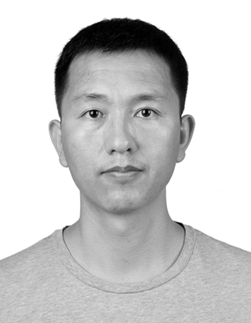

Rongchang ZhaoAssociate Professor, Master Supervisor Room 410, Computer Building, Email: byrons.zhao@gmail.com Wechat: 136 4744 9808
|

|
Short BioI am now an Associate Professor and Master Supervisor at the School of Computer Science, in Central South University. Before that, I received my PhD and bachelor's degrees from Department of Electronic Information Science and Technology, Lanzhou University, China, in 2006 and 2011, respectively, with Prof. Yide Ma. I have achieved the postdoc position in School of Information Science and engineering, with Prof. Min Wu, in 2015. Currently, I work in Central South University as an associate professor, as well as study in Digital Imaging Group of London, Dept. of Medical Biophysics, University of Western Ontario, Canada as a visiting professor. |
||
Research InterestsMedical Image Analysis, Artificial Intelligence, Deep Learning, Computer Vision. I focus on interdisciplinary researches at medical image analysis, computer vision and artificial intelligence, for improving lesion detection, anatomical structure segmentation and quantification, computer-aided diagnosis, and 3D reconstruction, especially ophthalmic disease-related works. |
||
Upcoming Events
|
||
News
|
||
Selected PublicationsFor a complete list, please check my google scholar. Robust Learning at Noisy Labeled Medical Images: Applied to Skin Lesion Classification. Synergistic Image and Feature Adaptation: Towards Cross-Modality Domain Adaptation for Medical Image Segmentation. PnP-AdaNet: Plug-and-Play Adversarial Domain Adaptation Network with a Benchmark at Cross-modality Semantic-Aware Generative Adversarial Nets for Unsupervised Domain Adaptation in Chest X-ray Segmentation. Unsupervised Cross-Modality Domain Adaptation of ConvNets for Biomedical Image Segmentations SV-RCNet: Workflow Recognition from Surgical Videos Using Recurrent Convolutional Network. 3D Multi-scale FCN with Random Modality Voxel Dropout Learning for Intervertebral Disc Localization and
Segmentation from Multi-modality MR Images. SFCN-OPI: Detection and Fine-grained Classification of Nuclei Using Sibling FCN with Objectness Prior Interaction. Automated Pulmonary Nodule Detection via 3D ConvNets with Online Sample Filtering and 3D Deeply Supervised Network for Automated Segmentation of Volumetric Medical Images.
Qi Dou, Lequan Yu, Hao Chen, Yueming Jin, Xin Yang, Jing Qin, and Pheng Ann Heng.
[paper] VoxResNet: Deep Voxelwise Residual Networks for Brain Segmentation from 3D MR Images.
Hao Chen, Qi Dou, Lequan Yu, Jing Qin, and Pheng Ann Heng.
[paper] Multi-level Contextual 3D CNNs for False Positive Reduction in Pulmonary Nodule Detection.
Qi Dou, Hao Chen, Lequan Yu, Jing Qin, and Pheng Ann Heng.
[paper]
3D Fully Convolutional Networks for Intervertebral Disc Localization and Segmentation.
Hao Chen*, Qi Dou*, Xi Wang, Jing Qin, Jack C. Y. Cheng and Pheng Ann Heng. 3D Deeply Supervised Network for Automatic Liver Segmentation from CT Volumes. Automatic Detection of Cerebral Microbleeds from MR Images via 3D Convolutional Neural Networks. Mitosis Detection in Breast Cancer Histology Images via Deep Cascaded Networks. Automatic Fetal Ultrasound Standard Plane Detection Using Knowledge Transferred Recurrent Neural Networks. Automatic Cerebral Microbleeds Detection from MR Images via Independent Subspace Analysis Based Hierarchical Features. (* indicates equal contribution) |
||
Selected Awards
|
||
TalksTalk on "Analyzing High Dimensional Medical Images with Deep Learning"at Hamlyn Centre for Robotic Surgery, Imperial College London, UK, Feb 2019. at Smart Robotics and Artificial Intelligence Workshop organized by Signate Life Sciences, HK, Dec 2018. Talk on "Towards AI-Powered Healthcare: Automated Medical Image Computing via Deep Learning" at Department of Computer Science & Engineering, CUHK, Mar 2019. at Department of Computer Science & Engineering, HKUST, Feb 2019. at Hong Kong Instuition of Science Annual Meeting, HK, Dec 2018. Talk on "Deep Learning for AI-Powered Medical Image Analysis in Radiology" at Hong Kong College of Radiologists (HKCR) Annual Scientific Meeting, HK, November 2018. Talk at Engineering Medical Innovation (EMedI) Summit 2018. organized by CUHK Chow Yuk Ho Technology Center for Innovative Medicine, August 2018. Talk on "Deep Learning for Medical Image Computing" at Department of Computing, HKPolyU, HK, August 2018. Talk on "Medical Image Computing via Deep Learning -- Detection and Segmentation" at BioMedIA lab in Imperial College London, UK, July 2018. at German Center for Neurodegenerative Diseases (DZNE), Germany, July 2018. Talk on "Intelligent Medical Image Detection and Segmentaiton via 3D Deep Learning" at AI in Healthcare Summit organized by ReWork, HK, June 2018. [link] Talk on "Deep Learning for Medical Image Analysis: Algorithms and Applications" at Department of Clinical Oncology at Queen Mary Hospital HKU, HK, April 2018. Talk on "3D Convolutional Networks for Computer-aided Lesion Detection in Medical Images" at A*Star Institute of High Performance Computing, Singapore, May 2017. Talk on "Automated Brain Lesion Detection in MRI Scans with Hierarchical Features" at Siemens Corporate Research, Princeton, US, June 2016. |
||
Press Coverage
|
||
Professional ActivitiesMembership of IEEE, IEEE EMBS, MICCAI Society. Conference Services: Program Committee of "MIC meets NeurIPS" 2018 Program Committee of IJCAI'19, AAAI'19, IJCAI'18 Reviewer of MICCAI'19, IROS'19, MICCAI'18, MICCAI'17 Journal Reviews: IEEE Transactions on Medical Imaging IEEE Transactions on Cybernetics IEEE Transactions on Biomedical Engineering IEEE Journal of Biomedical and Health Informatics NeuroImage Neurocomputing Pattern Recognition Medical Physics BMC Bioinformatics Computerized Medical Imaging and Graphics Neuroradiology Journal of Magnetic Resonance Imaging International Journal of Imaging Systems and Technology SPIE Journal of Medical Imaging SPIE Journal of Electronic Imaging Informatics in Medicine Unlocked |
||
MiscellanyI like cycling, yoga, cooking, reading, travelling. Understanding others is intelligent, understanding yourself is wisdom. |
||
|
Last updated date: Apr 2019. Click the map to see page view statistics since Jan 2016. |